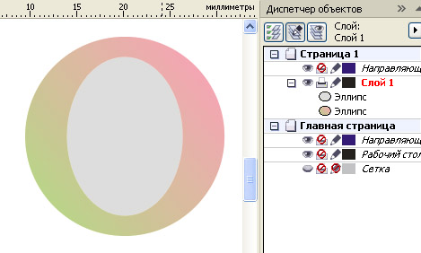

МЫЛЬНЫЕ ПУЗЫРИ
Мыльные пузыри нарисовать ещё легче, чем каплю воды.
Создайте круг с градиентной салатово розовой заливкой и внутри него эллипс, наподобие буквы О в антиквенных шрифтах.

Создайте группу перетекания. При размерах пузыря около 2 см достаточно 10 шагов. При других размерах столько, чтобы на шаг приходилось ок. 0,3 – 0,5 мм.
Создайте дубли круга по числу шагов перетекания. Поочередно выделяйте пару фигур: одну из полученных перетеканием (включая исходный эллипс) и один дубль круга и создавайте комбинированный контур (задние минус передние).
Должно получиться одиннадцать новых фигур (число шагов перетекания плюс одна). Задайте им всем равномерную прозрачность с уровнем примерно 90 – 95.
Исходный круг переместите на верхний уровень, задайте ему заливку белую и радиальную прозрачность. Таким образом получим блик. Продублируйте, вращайте, чтобы получить ещё один блик с противоположной стороны.
Чтобы ещё усилить блик, продублируйте оба круга с бликами, а размеры бликов на дублированных фигурах уменьшите. Исходный и дублированный блики должны быть концентричны.
Специально для CDRPRO.RU
Копирование урока или части его и публикация любым способом без письменного согласия автора запрещено.


Пузыри красивые-урок не понятный
Добавлено (08.06.2011, 13:27)
---------------------------------------------
А конкретно, "Создайте дубли круга по числу шагов перетекания. Поочередно выделяйте пару фигур: одну из полученных перетеканием (включая исходный эллипс) и один дубль круга и создавайте комбинированный контур (задние минус передние)."
Это и не понятно.....
lourisya,
Ой спасибо за нагляднось. Ну, наконец-то, разобралась. Еще до вашего пострелочного рисунка для таких тупней, как я. ;D Еле-еле в уроке с каплей разобрала чего там 7 копий сделать и чего из чего вычесть надо.....
Solowejka, урок очень понравился, последнее дополнение очень помогло разобраться, вот только еще один вопрос назрел, все не могу дойти до этого сам. Как высветлить край у пузыря!? Буду признателен за пояснение
Да просто круг без заливки, но с белым абрисом, к которому применена градиентная (линейная)прозрачность.
Solowejka, боже как же все просто, а я часа два точно пробовал разными способами, а момент с абрисом не учел:) Огромное спасибо за оперативность ответа.
Спасибо большое, урок хорош, сэкономил мне уйму времени.
Простите, не поняла зачем так сильно заморачиваться с созданием объектов вычитая "один из другого....? В чем смысл операции? ведь пузырик и так получается..... я не давно работаю в этой программе..может опыта нет чтоб понять..
Ой... вот сморю на картинке исходной пузырики то как настоящие - полностью прозрачные... а мой нет... он как на картинке внизу... как добиться такого эффекта? прошу прощение за тупость.. я "чайник" еще..